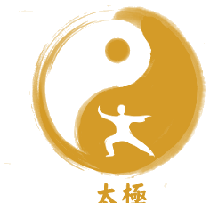

Tai Ji Quan Estilo Chen
"El Taijiquan es un sistema milenario que fusiona el arte marcial, la medicina tradicional y las filosofías del taoísmo y el confucionismo. La búsqueda del equilibrio perfecto entre firmeza y suavidad: Gang Rou Xiang Ji."
¿Qué es el Tàijíquán (太極拳)?
Algunos lo equiparan al Yoga, otros al Zen, y muchos lo definen como “Meditación en Movimiento”. El Tàijíquán (太極拳) integra y armoniza el cuerpo y la mente, desarrollando el trabajo profundo hacia las fuentes de la energía vital (Qi) y el espíritu (Shen).
Representación de la grandeza sin límites y la totalidad del cosmos.
El centro de equilibrio y polaridad Yin-Yang que rige la naturaleza.
La disciplina marcial aplicada para la defensa, la salud y la maestría.
Zhang San Feng y las Montañas de Wu Dang
Hace aproximadamente 800 años (Dinastía Song), el ermitaño taoísta Zhang San Feng (apodado "Montaña de Tres Picos") se retiró a la sagrada montaña de Wu Dang a meditar. Según cuenta la tradición, tras contemplar el combate entre una grulla y una serpiente, observó cómo los movimientos suaves y curvos de la serpiente lograban vencer los ataques fuertes y directos de la grulla.
Los 3 Caminos de la Enseñanza
Aunque hoy se valora por su salud, los grandes maestros concibieron el Taiji como un arte integral donde lucha, salud y estética convergen.
1. Marcial & Combate
El propósito original. Exige una perfecta relación con el cuerpo, armonía postural y la combinación equilibrada de flexibilidad y fuerza para neutralizar al adversario.
2. Salud & Longevidad
Favorece la fisiología interna, estimula la circulación de la sangre y el Qi, fortalece el sistema nervioso central y protege el proceso metabólico natural de la vida.
3. Arte & Expresión
La belleza del movimiento fluido, continuo y circular como una danza marcial donde la mente serena dirige la energía elástica del cuerpo.
Los 5 Estilos Principales de Taijiquan
Desde la raíz ancestral del estilo Chen surgieron las distintas escuelas con sus características propias:
Fundado por Chen Wangting (1600-1680). El estilo más antiguo y la raíz de todos los demás. Se destaca por sus posturas bajas, devanado de seda (Chan Si Gong) y el uso explícito de Fajing (explosión de energía elástica) combinado con lentitud meditativa y armas clásicas.
Creado por Yang Luchan (1799–1872) tras aprender en secreto en Chenjiagou. Introdujo movimientos suaves como nubes, fluidos e ininterrumpidos, sin saltos ni explosiones, extendiendo la práctica terapéutica en Beijing a todas las edades.
Desarrollado por Wu Yu-Hsiang (1812–1880) combinando las enseñanzas de Yang Luchan y el estilo Chen. Caracterizado por la flexibilidad, movimientos circulares pequeños y una coordinación extremadamente precisa.
Creado por Wu Jianquan (1870–1929). Movimientos compactos, cortos, inclinados hacia adelante para el equilibrio, muy populares por su comodidad y elegancia postural.
Creado por el reconocido médico y maestro Sun Lutang (1861–1932) al integrar tres artes marciales internas: Xingyiquan, Baguazhang y Taijiquan. Famoso por sus pasos ágiles, rápidos y cambios continuos de dirección.
Horarios de Clases & Práctica al Aire Libre
Práctica en el Mástil del Parque Los Andes (Chacarita). Clases impartidas en la naturaleza para la salud física, mental y energética.
Shaolin Kung Fu (Adultos)
Posturas tradicionales (Bu Fa), acondicionamiento de tendones, formas clásicas (Taolu), bastón (Gun) y combate tradicional.
Kung Fu Infantil
Desarrollo psicomotriz, disciplina consciente, juegos pedagógicos tradicionales y respeto ético (Wu De) para niños y jóvenes.
Chen Taijiquan & Qi Gong
Espirales de seda (Chan Si Gong), forma antigua Laojia Yi Lu, respiración Tu Na y cultivo energético en el Dantian.
Atención con MTC
Acupuntura tradicional, moxibustión, masaje clínico Tuina, ventosas y fitoterapia. Diagnóstico de pulso y lengua individualizado.
Empieza tu camino en el Taijiquan Chen tradicional en Chacarita
Supervisión técnica personalizada guiada por el Jiaolian Pablo Encinas.